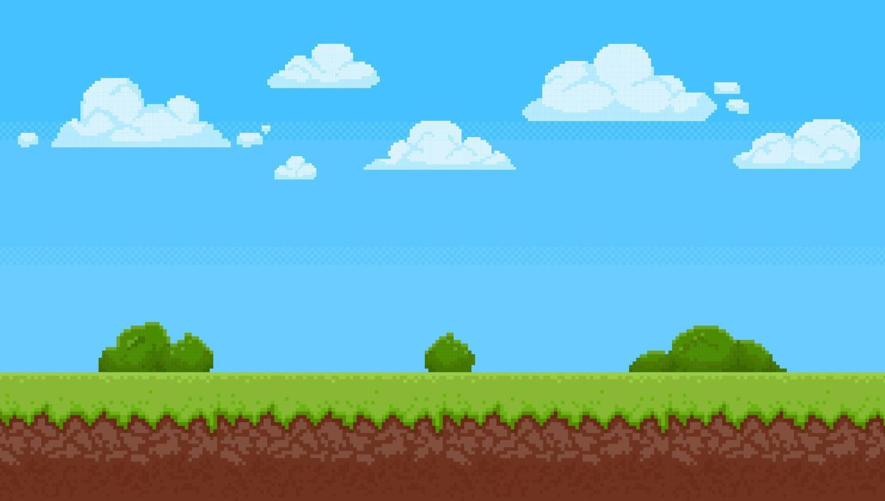
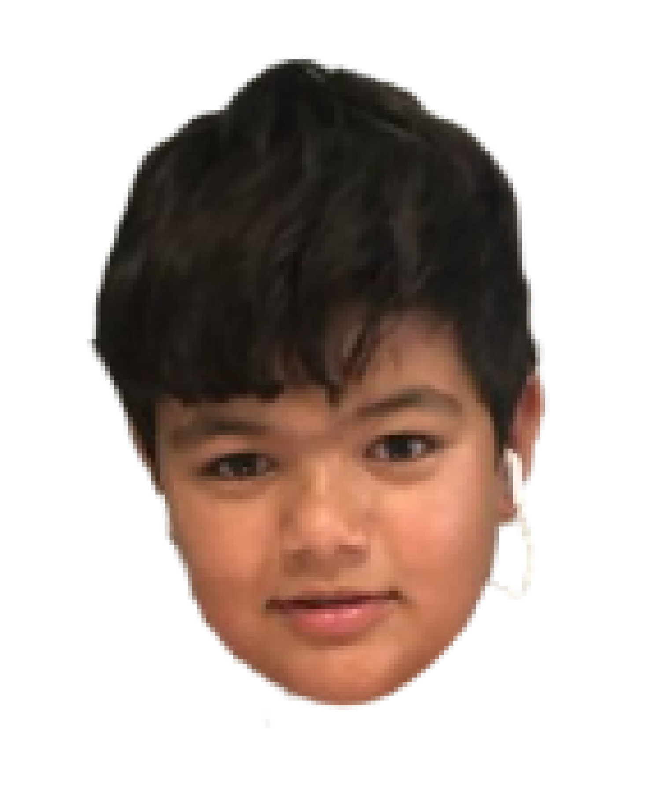
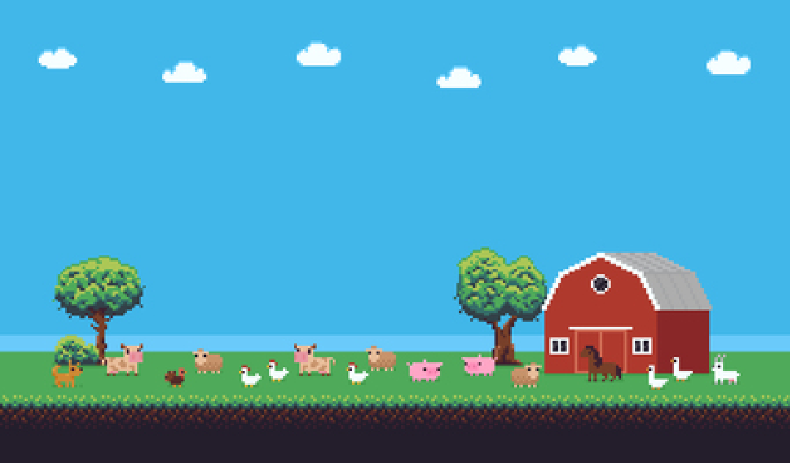
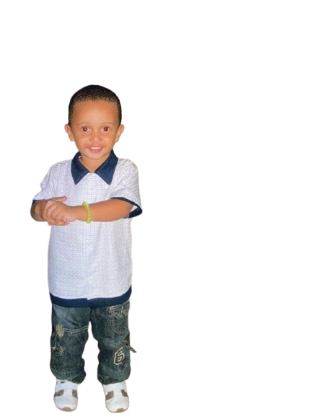
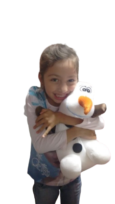

POSSI
A big, muscular guy, shaped like a family man and unlike Kauê, he has a light focus on Valorant. Responsible for the API part of Nutritrack.
Cara grande, musculoso, shape de um pai de família e ao contrario do Kauê tem uma leve mira no Valorant. Responsável pela parte de API do Nutritrack.
Cara grande, musculoso, shape de um pai de família e ao contrario do Kauê tem uma leve mira no Valorant. Responsável pela parte de API do Nutritrack.

GIOVANNA
A alimentação saudável é essencial para o bom funcionamento do corpo e da mente. Ao escolher alimentos nutritivos, como frutas, verduras, proteínas magras e grãos integrais, ajudamos a prevenir doenças como diabetes e obesidade, além de fortalecer o sistema imunológico e melhorar a digestão. Uma dieta balanceada também

JAPA
A alimentação saudável é essencial para o bom funcionamento do corpo e da mente. Ao escolher alimentos nutritivos, como frutas, verduras, proteínas magras e grãos integrais, ajudamos a prevenir doenças como diabetes e obesidade, além de fortalecer o sistema imunológico e melhorar a digestão. Uma dieta balanceada também


PALHAÇÃO
A gangster's face, but a heart of gold. One of the nicest guys in the room who needs no introduction. Responsible for the FrontEnd of Nutritrack.
Cara de bandido, mas coração de ouro. Um dos mlks mais gente boa da sala que dispensa apresentações. Responsável pelo FrontEnd do Nutritrack.
Cara de bandido, mas coração de ouro. Um dos mlks mais gente boa da sala que dispensa apresentações. Responsável pelo FrontEnd do Nutritrack.
KAUÊ
A misunderstood genius, a bit crazy but very knowledgeable about codes and plays a slightly questionable Valorant game, he was responsible for the API part of Nutritrack.
Um gênio incompreendido, meio maluco mas manja muito dos códigos e joga um valorant levemente duvidoso ficou responsável pela parte de API do Nutritrack.
Um gênio incompreendido, meio maluco mas manja muito dos códigos e joga um valorant levemente duvidoso ficou responsável pela parte de API do Nutritrack.
ANA LUIZA
A alimentação saudável é essencial para o bom funcionamento do corpo e da mente. Ao escolher alimentos nutritivos, como frutas, verduras, proteínas magras e grãos integrais, ajudamos a prevenir doenças como diabetes e obesidade, além de fortalecer o sistema imunológico e melhorar a digestão. Uma dieta balanceada também

RAISSA
A alimentação saudável é essencial para o bom funcionamento do corpo e da mente. Ao escolher alimentos nutritivos, como frutas, verduras, proteínas magras e grãos integrais, ajudamos a prevenir doenças como diabetes e obesidade, além de fortalecer o sistema imunológico e melhorar a digestão. Uma dieta balanceada também